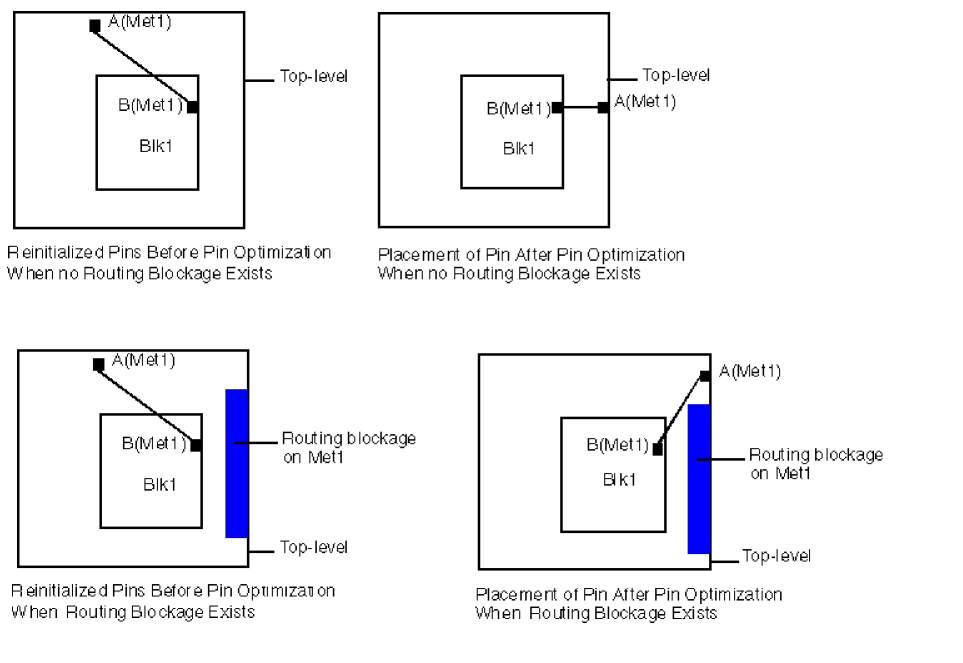
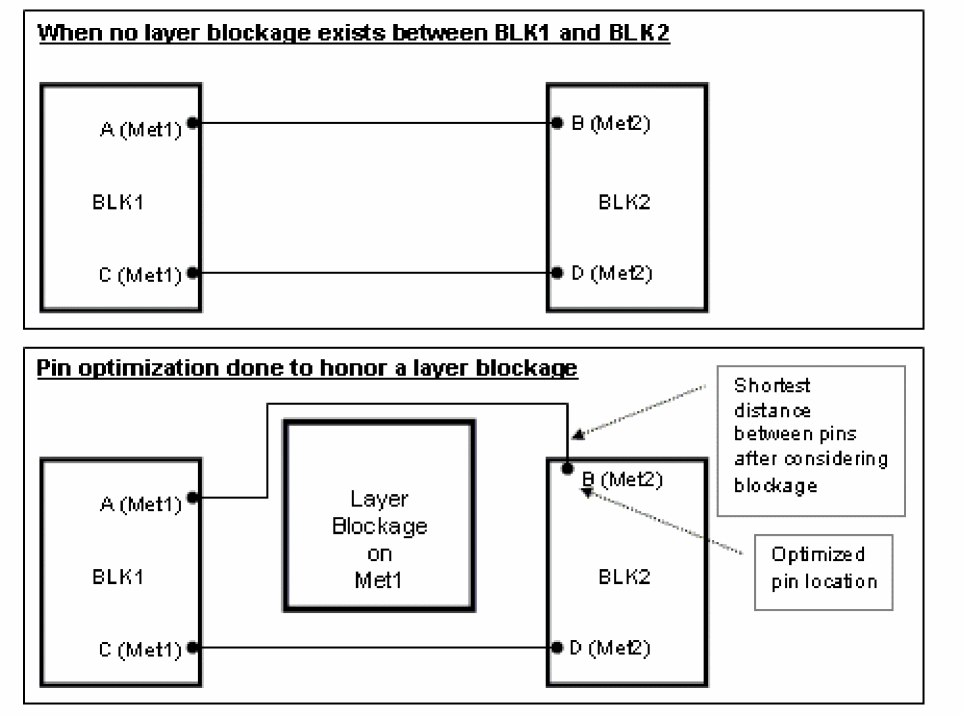

Specifying the Priority of Optimized Pins Using Pin Planner
Pin Optimizer enables you to specify the priority in which it optimizes the pins. For example, if you want P0 to be optimized before P1, you can specify a higher priority for P0 as compared to P1. Pin Optimizer uses the associated priority of the pins during optimization and pins with higher priority are optimized first. You can specify the priority of pins in the -128 to 128 range, where -128 is the lowest priority.
To define the priority of a pin, perform the following steps:
- Select the net in the Navigator window.
-
Click Net Priority in the constraint list of Constraint Manager.
The Create Priority window is displayed. - Specify the priority in the Priority textbox.
-
Click OK.
The priority of the pin is set.
Now if you optimize the pins, Pin Optimizer optimizes the pins based on the associated priority.
Support for Rectangular and Square Pins and Blockages
In addition to the supported constraints described above, Pin Optimizer supports the following:
- Pin optimization supports rectangular as well as square pins. If a design consists of pins that are polygonal or rectilinear in shape, they are placed using their bounding box shape.
-
Pin Optimizer supports routing blockages on top-level and level-1. For example, if you have pins on the Metal1 layer and a routing blockage is defined on the same layer, then while placing the pins, Pin Optimizer places the pins away from the blockage with the shortest possible net length. Consider the placement of pin in the figures given below.
 -
Pin Optimizer also supports layer blockages of the design. If there is a layer blockage between two blocks, Pin Optimizer ensures the following while moving the pins:
If a layer blockage is on a particular layer and the pins are on another layer, then the blockage will not be considered. Consider the example in the diagrams below:

Pin Optimizer does not move pins with “firm” and “locked” status. If the design has previously placed pins whose status is not firm, Pin Optimizer re-places them and snaps all pins to the placement or manufacturing grid depending on the block type.
Related Topics
Creating Square and Rectangular Pins in the Pin Tool
Pins Selection for Optimization
Specifying Pin Spacing for Pin Optimization
Return to top